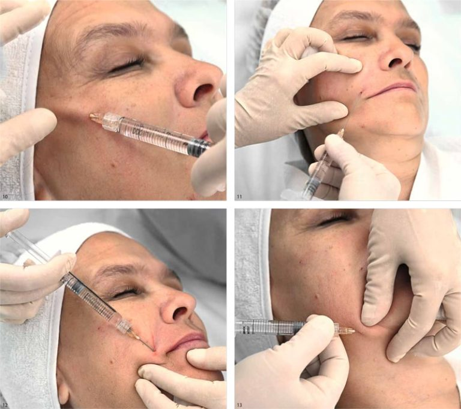

Глубокое увлажнение и восстановление кожи на клеточном уровне
Цена
от 7 500 ₽
Длительность
30-40 минут

Биоревитализация -- это инъекционная процедура для глубокого увлажнения кожи на клеточном уровне. Препараты на основе гиалуроновой кислоты вводятся микроинъекциями в дерму, где запускают процесс естественного обновления и восстановления кожи.
В нашей клинике используются препараты линейки Revi (Eye, Style, Silk, Strong) и Novacutan (SBio, Ybio). Особенность препаратов Revi -- содержание трегалозы, которая обеспечивает пролонгированный эффект увлажнения. Каждая формула подобрана для решения конкретных задач кожи.
Revi Style подходит для молодой кожи и профилактики первых возрастных изменений. Revi Eye создан специально для деликатной зоны вокруг глаз. Revi Silk с шёлковым протеином -- для глубокого восстановления. Revi Strong -- для выраженных возрастных изменений. Novacutan -- премиальная линейка с полинуклеотидами нового поколения.
Важно: Для максимального эффекта рекомендуется курс из 3-4 процедур с интервалом 2-4 недели. Поддерживающие процедуры -- раз в 6-12 месяцев.
Препараты для глубокого увлажнения и омоложения кожи
Для зоны вокруг глаз, устранение темных кругов и снижения тонуса
Профилактика первых возрастных изменений, для молодой кожи
Увеличенный объем для обработки лица и шеи
С шелковым протеином для глубокого восстановления
Для выраженных возрастных изменений 3-4 степени по Мерц
Премиум-препарат с полинуклеотидами для максимального увлажнения
Биоревитализант нового поколения для комплексного омоложения
Процедура занимает 40-60 минут и проходит практически безболезненно
Оценка состояния кожи, определение типа и потребностей
Полное очищение кожи лица
Нанесение крема-анестетика на 15-20 минут
Введение препарата по специальной технике папул или линейной
Нанесение маски или крема для снятия раздражения
Биоревитализация рекомендована при следующих состояниях кожи
Процедура не проводится при наличии следующих состояний
Для наилучшего результата соблюдайте рекомендации
Процедуры, которые дополняют и усиливают результат
Верните коже сияние и молодость. Косметолог Надежда подберёт оптимальный препарат и курс процедур для вашего типа кожи.